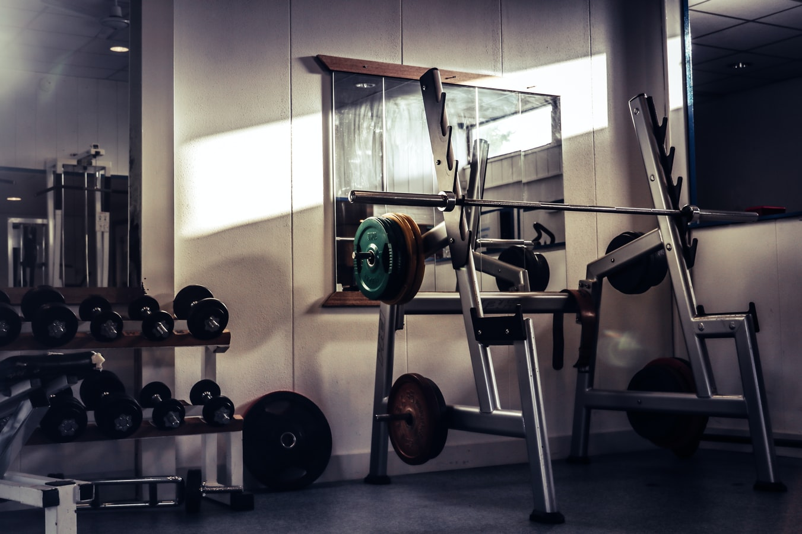

Why blog at all?
I've started this blog for a few reasons:
- I code in my freetime and need a project to work on.
- As a journal for my lifts.
- To comment on how training has changed since Covid-19.
Things have definitely changed a lot this year. As I live and train in Scotland, I’ve been not training for more than 6 months.
At the start of the year I was competing in my first competition and intermediate training.The training before the competition was the hardest I’ve ever done, and I got some new personal bests as a result.
